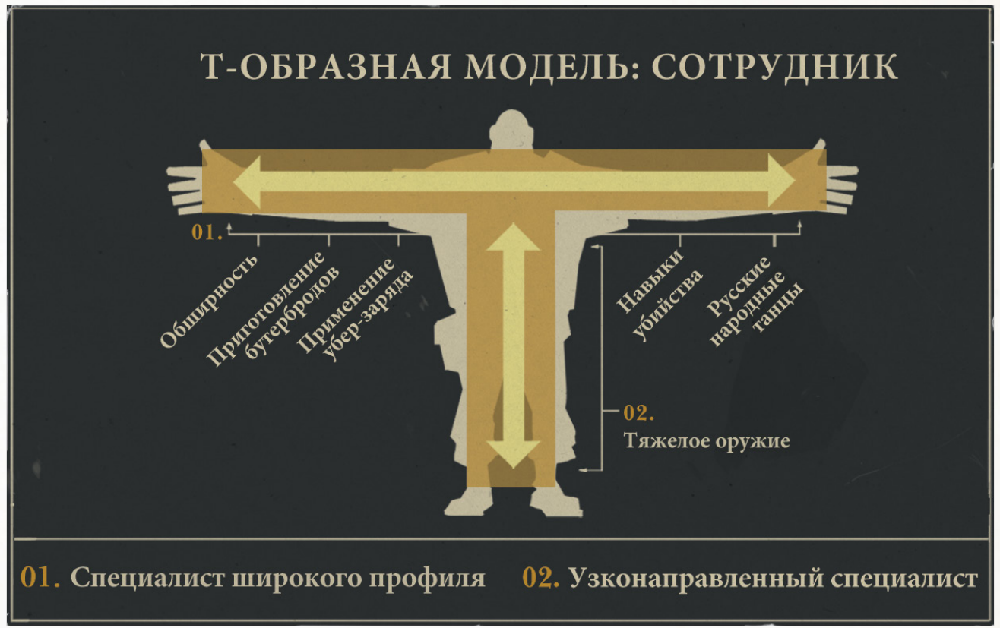
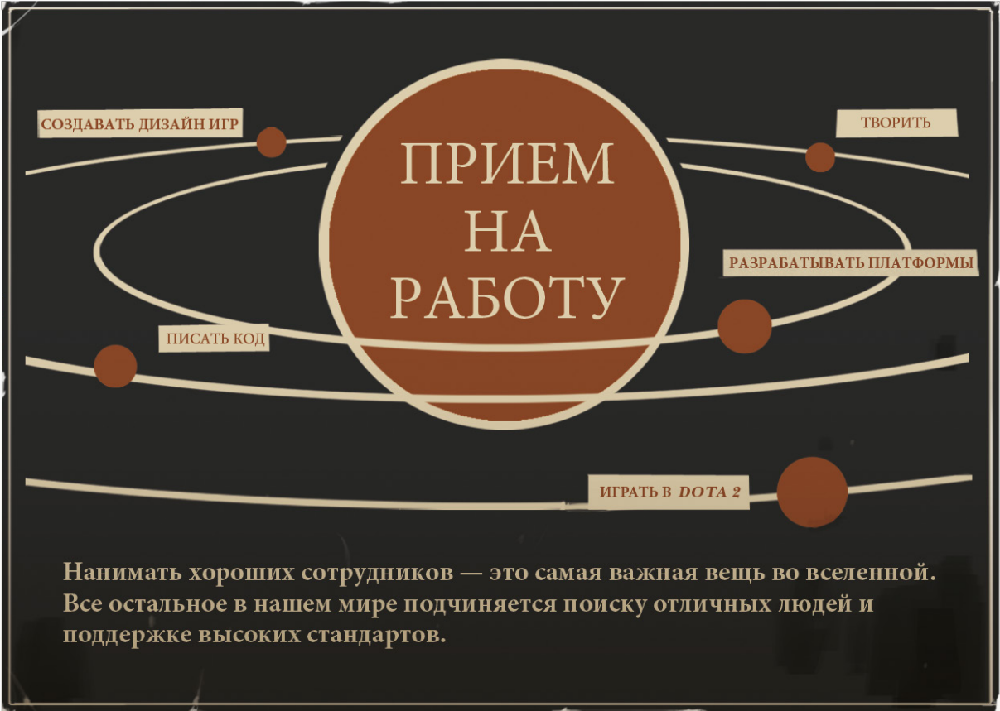

В Валв нет иерархии как понятия. Даже Гейб никому не указ. Видеть это неожиданно, а понять очень сложно. В связи с этим в заметке не будет заголовков!
Иерархия идеальна для поддержки стабильности и предсказуемости. Она упрощает планирование и облегчает управление большой группой людей с верхушки и до самых низов, и именно поэтому она так активно применяется в армии.
Но если вы работаете в сфере развлечений и последние 10 лет делаете всё возможное для того, чтобы привлечь самых умных, изобретательных и одарённых людей на земле, то, просто наказав им сесть за рабочий стол и делать то, что велено, вы даром растратите 99% их ценности. Нам нужны новаторы, а значит, необходимо поддерживать условия, в которых они будут преуспевать.
Вот почему в Valve все равны. Этим мы хотим сказать, что у нас нет руководства в общепринятом смысле, то есть отсутствуют отношения «начальник-подчиненный». У нас есть основатель компании, он же президент, но даже он вам не начальник. Вы управляете компанией сами — пользуетесь появившимися возможностями и избегаете риска. Вы обладаете полномочиями, необходимыми для реализации проектов. В ваших руках вывод продуктов на рынок.
"С великой силой приходит великая ответственность":
Если вы сейчас подумали: «Да это же огромная ответственность!», — вы правы. И именно поэтому набор сотрудников — это самое ответственное задание, которое вам предстоит выполнить в Valve. Проводя собеседование с потенциальным сотрудником, вы должны не только определить, насколько он одарён и способен ли работать в команде, но также понять, способен ли он в прямом смысле слова руководить нашей компанией — ведь ему придётся это делать.
Т. к. у Валв нет иерархии, то нет и отделов. А значит, нет и постоянного рабочего пространства, которое было нужно для отделов. А раз нет постоянного рабочего пространства, то пусть оно будет переменным!
Почему у вашего рабочего стола есть колеса? Пусть эти колесики символически напоминают вам о необходимости думать о том, куда можно направить свои усилия, чтобы принести больше пользы. Но не забывайте и о том, что это самые настоящие колеса, с помощью которых вы можете переместить свой стол куда угодно.
Вы заметите, что сотрудники нашей компании часто перемещаются: целые рабочие группы передвигают свои столы, чтобы им было удобнее работать вместе. В Valvе нет никаких организационных ограничений, которые помешали бы вам работать рядом с людьми, которым вы помогаете или которые часто помогают вам.
Сложно найти сотрудников, которые часто перемещаются в нашем рабочем пространстве. Поэтому у нас есть страница http://user — зайдите туда! Мы определяем ваше местоположение по месту подключения вашего компьютера и на сайте можно найти карту, на которой показано текущее местонахождение всех пользователей.
Если нет управления, то ты делаешь то, что интересно тебе и остальным. Кивок в сторону Гугла с его 20% процентами:
Мы слышали, что в других компаниях действует правило, согласно которому сотрудники должны посвящать определённый процент своего времени самостоятельным проектам. В компании Valve этот процент равен 100.
Можно сказать, что сотрудники голосуют за проекты ногами (или колёсами стола).
"Если супер-герои — все, то никто не супер-герой." Если никто не менеджер, то менеджеры — все.
Если вы работаете у нас, это означает, что вы хорошо выполняете свою работу. А когда вы выполняете свою работу хорошо, другие хотят, чтобы вы работали вместе с ними, и стараются привлечь вас в свой проект. Но решение, в конечном счете, должны принимать вы сами. (На самом деле, вы даже будете жалеть, что свои соображения о том, что вам следует делать, вам высказывает не один человек, а сотни).
Вас наняли, чтобы вы постоянно искали возможность принести максимум пользы.
Однако в проектах есть лидеры:
Довольно часто в группе, занимающейся тем или иным проектом, появляется «лидер». Этот человек выполняет функцию, которая отличается от традиционной роли руководителя. Чаще всего он просто доносит нужную информацию до других членов группы. Лидер рабочей группы удерживает в голове сразу всю информацию о проекте, и другие члены группы могут использовать его в качестве информационного ресурса, по которому проверяется правильность принимаемых решений. Лидер помогает рабочей группе и является её центром.
И иногда может появляться структура для лучшей эффективности. При этом такие группы появляются естественным путём, а не указанием сверху.
Проектные группы часто обладают внутренней структурой, которая временно формируется в соответствии с потребностями группы. Несмотря на то, что у сотрудников Valve нет чётко определённых рабочих обязанностей или ограничений по ответственностям, они имеют чёткое представление, в чём заключается их «работа» в каждый отдельно взятый день. Они наряду с коллегами сами формируют круг своих обязанностей, который меняется в зависимости от целей рабочей группы.
Такие «обязанности» меняются по мере того, как меняются задачи, стоящие перед группой. При этом временная структура помогает членам группы лучше понимать, чего им ожидать друг от друга. Если сотрудник переходит в другую группу или у группы меняются приоритетные задачи, каждый член группы может принять на себя новую роль в соответствии с изменившимися требованиями.
В компании проводится рецензирование (анонимное peer-review, если угодно) и ранжирование. Рецензирование нужно, чтобы понять, как расти профессионально. А ранжирование — чтобы понять, кто приносит больше всех пользы и достоин большей платы за работу.
Как происходит ранжирование. 4 показателя: 1. Профессиональный уровень/технические навыки. Насколько сложные и уникальные задачи вы решаете. 2. Продуктивность/результативность работы. Учитывается количество "готовой к выпуску значимой, полноценной работы".
Что-то из [[Книга Джейсона Фрайда и Дэвида Ханссона. Не сходите с ума на работе]]:
Длинный рабочий день не говорит о продуктивности, более того, с определенного момента он начинает указывать на неэффективность вашей работы. Наиболее важной является ваша способность поддерживать разумный баланс между работой и личной жизнью и эффективно использовать время в офисе, а не работать круглые сутки.
У сотрудников Валв традиционно нет того, что называется "должностью".
Каждый может быть гейм-диайнером. Каждый может ставить под сомнение работу своих коллег.
Наглядным выражением этих идей являются авторские титры в наших играх: мы просто приводим длинный список имен в алфавитном порядке. И больше ничего. Мы сознательно поступили так, когда выпускали Half-Life, и мы гордимся тем, что поддерживаем эту традицию до сих пор.
Наиболее успешные сотрудники Valve отлично разбираются в самых разных областях и являются специалистами мирового класса в более узкой области. (См. «Т-образные люди»). Поскольку в Valve трудятся сотрудники с большим набором талантов, в нашей компании обычно проще наработать умения за пределами вашей специализации.

Как же всё это не разваливается? За счёт очень осторожного найма сотрудников:
Заставить этот механизм работать — непростая задача, которая во многом зависит от нашей осмотрительности при привлечении/поиске сотрудников. Если мы начнём приводить в компанию людей, которые менее самостоятельны, чем мы, менее энергичны и не способны принимать важные решения, то многие из структур, описанных в этой книге, перестанут работать.

Если у Вас в голове тоже вертелась мысль, а как же тогда определять тех, кого увольнять, то вот:
Обычно сразу становится видно, правильно ли мы поступили, взяв кого-нибудь на работу. У нас нет менеджеров и, соответственно, разделения полномочий, поэтому в некоторых случаях для того, чтобы понять, подходит ли нам новичок, требуется время. Это один из минусов естественной структуры компании — неудачное решение о приёме сотрудников может принести массу вреда, и иногда у нас уходит слишком много времени на то, чтобы это понять. В конечном счёте люди, которые приносят больше вреда, чем пользы, всегда отсеиваются, но нанесённый ими ущерб может быть весьма значительным.
Пока же перечислим некоторые вопросы, которые мы всегда себе задаём, оценивая кандидатов: • Хотел бы я, чтобы этот человек был моим начальником? • Многому ли он меня научит? • Что будет, если этот человек начнёт работать у наших конкурентов?